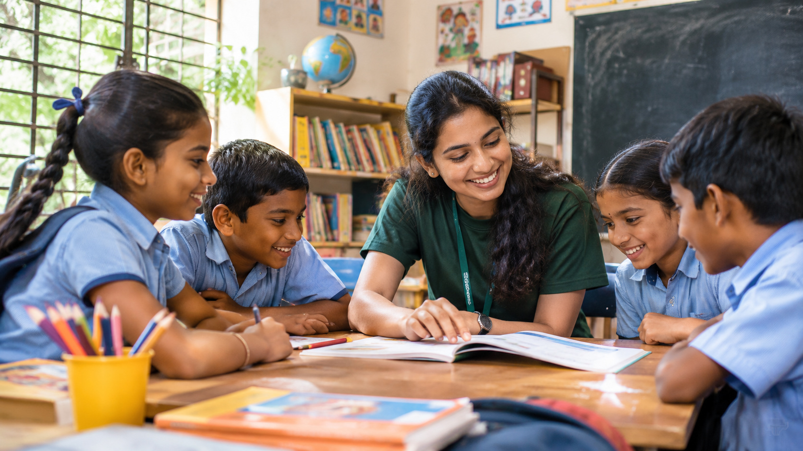
Education · Demo listing
Tutoring for Kids
Voluntr Demo Collective · Mumbai
Help young learners build confidence in reading and mathematics.
On-site · 2–4 hours/week ↗
Explore community opportunities that fit your skills, interests and schedule.
18 opportunities found · Clear filters

Voluntr Demo Collective · Mumbai
Help young learners build confidence in reading and mathematics.
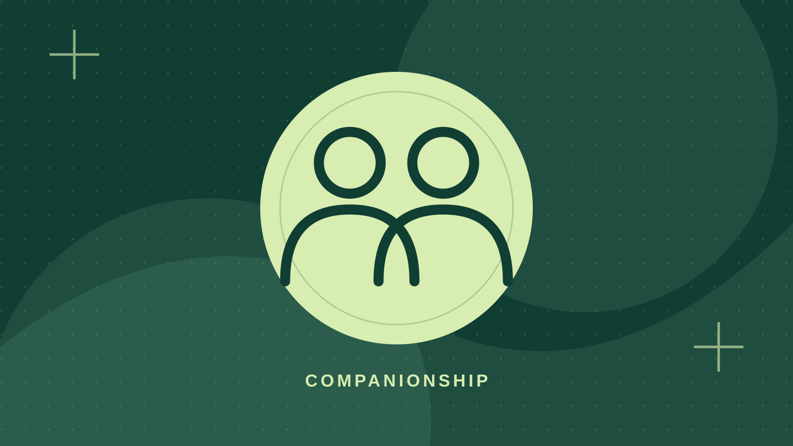
Voluntr Demo Collective · Pune
Bring conversation and companionship to older adults.
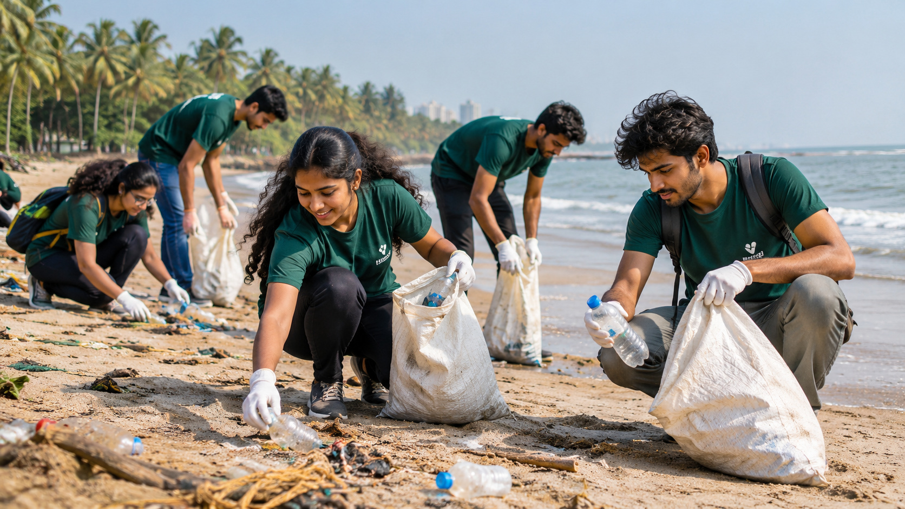
Voluntr Demo Collective · Mumbai
Help restore public spaces through a community cleanup.
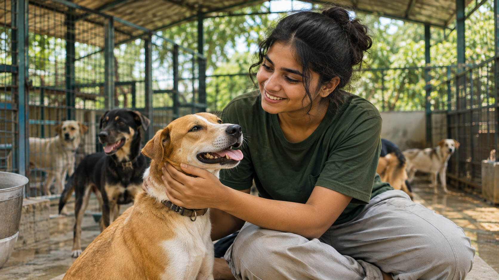
Voluntr Demo Collective · Thane
Support the daily work of a local animal care team.
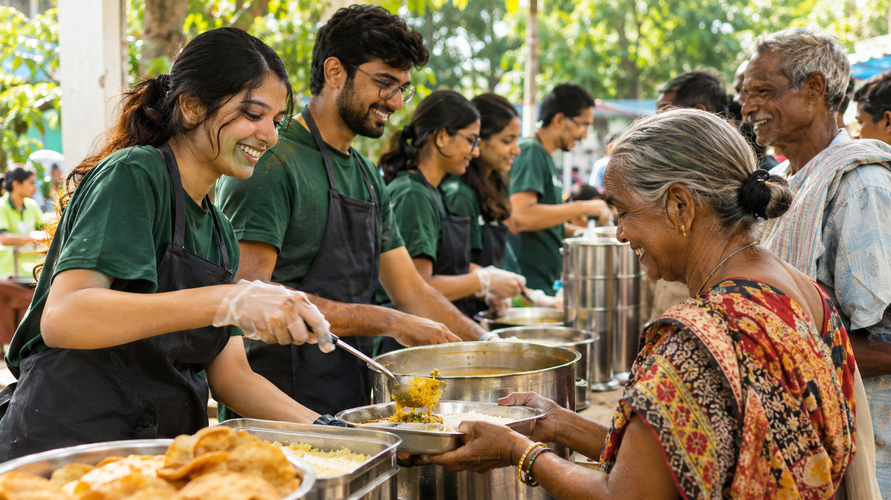
Voluntr Demo Collective · Mumbai
Help sort and distribute essential food supplies.
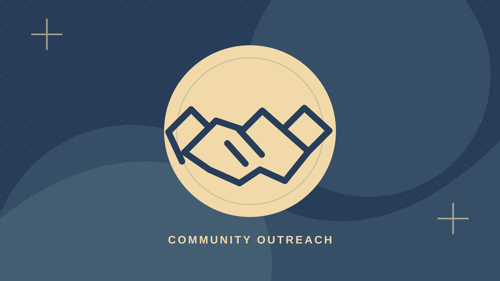
Voluntr Demo Collective · Delhi
Support a coordinated outreach and essential supplies program.
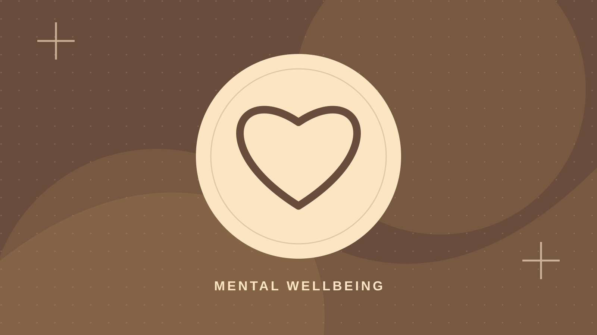
Voluntr Demo Collective · Remote
Create thoughtful awareness resources alongside trained professionals.
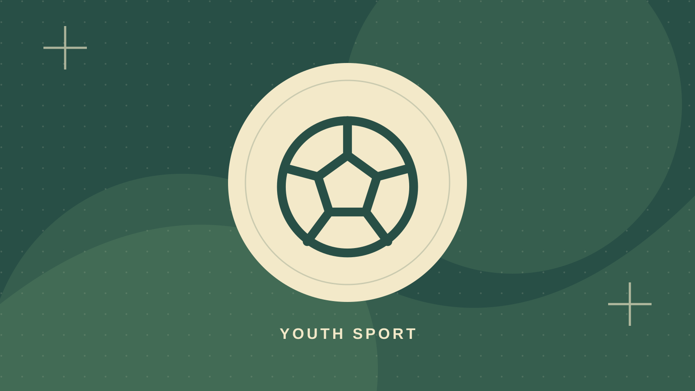
Voluntr Demo Collective · Bengaluru
Make recreational sport more accessible to young people.
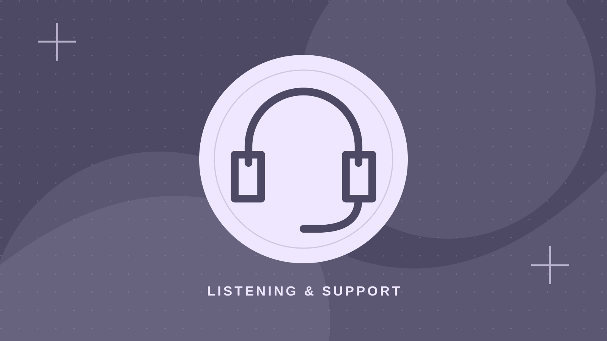
Voluntr Demo Collective · Remote
Support the non-clinical operations of a helpline team.
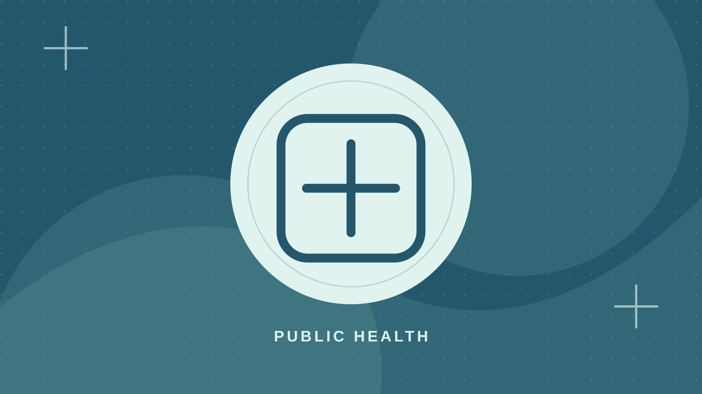
Voluntr Demo Collective · Mumbai
Help share reviewed community health information.
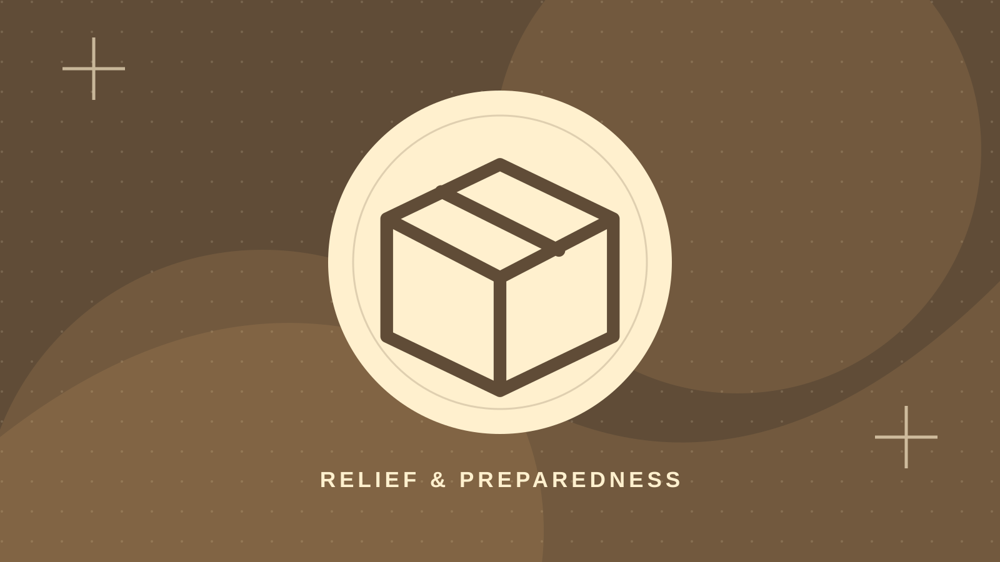
Voluntr Demo Collective · Chennai
Support preparedness and relief logistics with a trained team.
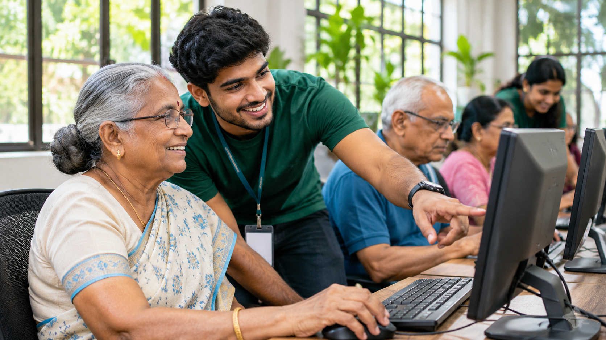
Voluntr Demo Collective · Mumbai
Help older adults feel confident using everyday technology.
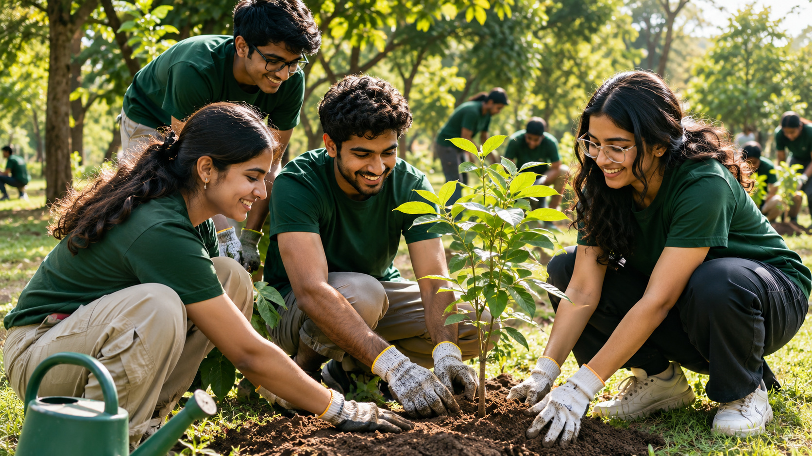
Voluntr Demo Collective · Pune
Grow a greener neighborhood one seedling at a time.
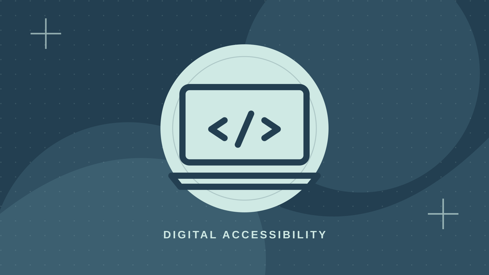
Voluntr Demo Collective · Remote
Help a nonprofit make its digital resources easier to use.
Voluntr Demo Collective · Remote
Help community groups communicate their work responsibly.
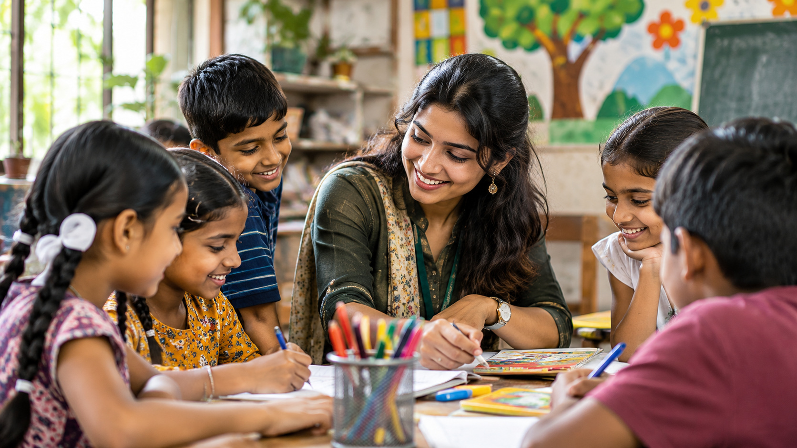
Voluntr Demo Collective · Bengaluru
Create a welcoming space for young readers.
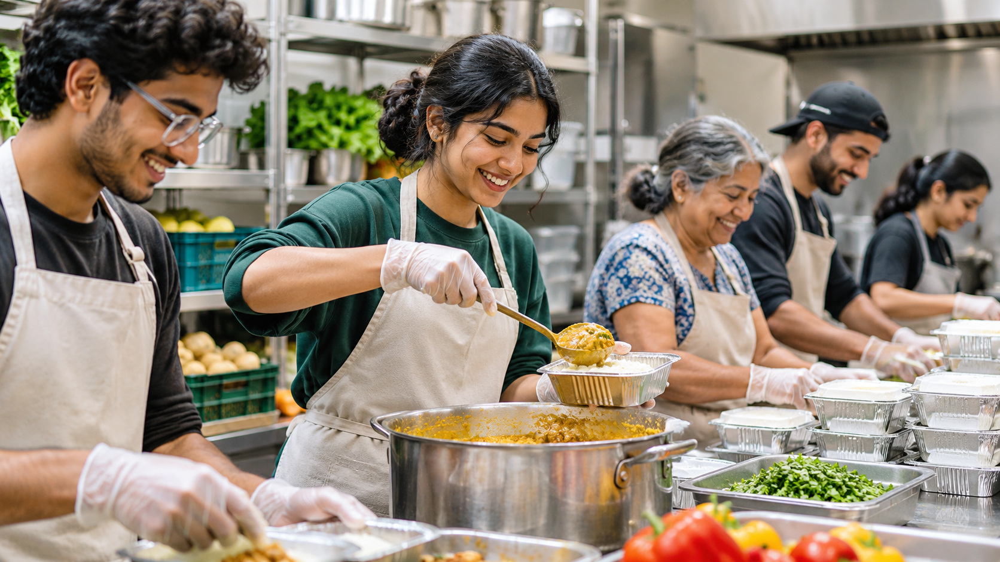
Voluntr Demo Collective · Thane
Support a community kitchen with meal preparation.

Voluntr Demo Collective · Pune
Help an animal welfare team organize adoption awareness.